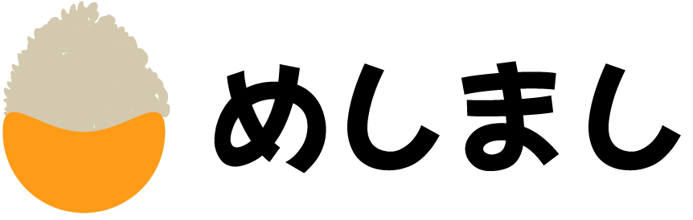
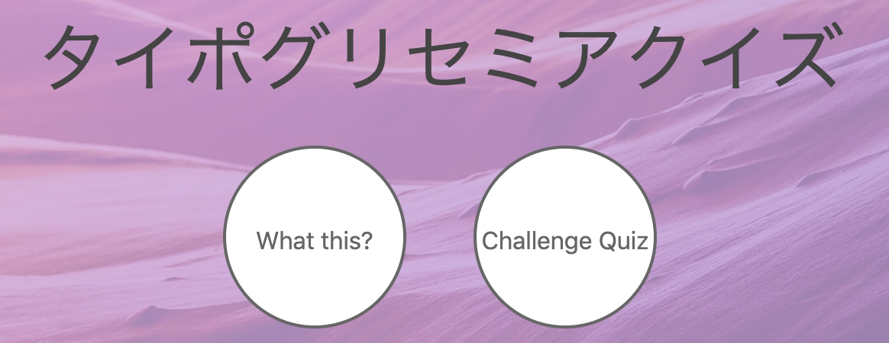

<!DOCTYPE html lang="ja">
<html>
  <head>
    <meta charset="utf-8" />
    <meta name="viewport" content="width=device-width,initial-scale=1" />
    <meta http-equiv="X-UA-Compatible" content="IE=edge" />
    <title>ましのPortFolio</title>
    <meta name="descripton" content="PortFolio of masi" />
    <link rel="stylesheet" href="css/base.css" />
    <script type="text/javascript" src="js/jquery-3.4.1.min.js"></script>
    <script type="text/javascript" src="js/lib/turn.js"></script>
    <script type="text/javascript" src="js/lib/hash.js"></script>
    <script src="https://cdn.jsdelivr.net/npm/chart.js@2.8.0"></script>
    <script type="text/javascript" src="js/portfolio.js"></script>
  </head>

  <body>
    <!-- This website includes the work that is distributed in the Apache License 2.0-->

    <div id="canvas">
      <div id="flipbook">
        <div ignore="1" class="tabs">
          <div class="left"></div>
        </div>
        <div id="test" class="change hard own-size"></div>
        <div class="change hard  own-size"></div>
        <div>
          <div class="icon"></div>
          <div class="about">
            <h1 style="text-align:center">まし</h1>
            <table>
              <tbody>
                <tr>
                  <th>grade</th>
                  <td>B2</td>
                </tr>
                <tr>
                  <th>
                    Favorite
                  </th>
                  <td>ラーメン・ピザ・コーヒー</td>
                </tr>
                <tr>
                  <th>Twitter</th>
                  <td><a href="https://twitter.com/masibw">@masibw</a></td>
                </tr>
                <tr>
                  <th>GitHub</th>
                  <td>
                    <a href="https://github.com/masibw">masibw</a>
                  </td>
                </tr>
                <tr>
                  <th>blog</th>
                  <td>
                    <a href="https://mesimasi.com">めしまし</a>
                  </td>
                </tr>
                <tr>
                  <th>Mail</th>
                  <td>masi19bw[at]gmail.com</td>
                </tr>
              </tbody>
            </table>
          </div>
        </div>
        <div>
          <h1 style="text-align:center">History</h1>
          <ul>
            <li>1999年 8月3日 誕生</li>
            <li>2011年 日本珠算連盟 <strong>珠算2段・暗算4段</strong>取得</li>
            <li>
              2014年 Bootstrapを用いて簡単な紹介ページを作成した(公開停止済み)
            </li>
            <li>2015年 JavaでMinecraftのModを作ろうとして挫折</li>
            <li>2016年 7月 <strong>全日本剣道連盟 2段取得</strong></li>
            <li>2016年 11月 <strong>英語検定 2級取得</strong></li>
            <li>
              2018年 4月 基本情報技術者試験合格・TOEIC(IP)720点獲得
            </li>
            <li>2018年 7月 TOEIC(IP)750点獲得</li>
            <li>2018年 8月 Unityを使って簡単なゲームを自作</li>
            <li>2018年 10月 <strong>応用情報技術者試験合格</strong></li>
            <li>
              2019年 1月
              <strong>TOEIC(IP)875点獲得</strong>・WordPress自作テーマを作成
            </li>
            <li>
              2019年 2月
              C・Javaの勉強を本格的に始めソートやリスト・ツリーなどの実装を書籍を読みながら行う
            </li>
            <li>
              2019年 6月 ブログとタイポグリセミアクイズwebアプリ(Java
              SpringBootを使用)を作成・VPSをレンタルしNginxを使用して公開
            </li>
            <li>2019年 7月 本ポートフォリオを作成</li>
          </ul>
        </div>
        <div>
          <h1 style="text-align:center; margin-bottom:0px;">Skills</h1>
          <div class="radarCharts"><canvas id="languages"></canvas></div>
          <div class="radarCharts"><canvas id="others"></canvas></div>
          <p style="text-align:center">
            5:なんでもできる 4:結構できる 3:まあまあできる 2:調べつつなんとか
            1:使ったことはある
          </p>
        </div>
        <div id="Works">
          <h1 style="text-align:center;">Works</h1>
          <a href="https://mesimasi.com"
            ><div class="eachWork">
              
              <p class="delete">
                WordPressを用いたブログです。HTML/CSSを主に用いてスッキリ爽やかなイメージで自作テーマを作成しました。レスポンシブ対応済みです。
              </p>
            </div></a
          >
          <a href="https://quiz.mesimasi.com">
            <div class="eachWork">
              
              <p class="delete">
                JavaのSpringBootを用いてクイズアプリを作成しました。DBの使い方やNginxなどのサーバーサイドについても理解を深めることができました。めしましのサブドメインで作成しSSL化も行いました。
              </p>
            </div></a
          >
          <div class="eachWork">
            <h2>ポートフォリオ</h2>
            <p class="delete">
              このポートフォリオです。Turnjsをメインに用いて作成しました。シックな本をイメージし表紙や各ページ背景をデザインしました。
              タブ機能自体はサンプルを真似しただけですが縦書きのタブインデックスにしたりとおもにCSS部分をこだわりました。
            </p>
          </div>
        </div>

        <div class=" change hard fixed  own-size"></div>
        <div class="change hard  own-size"></div>
        <div ignore="1" class="tabs">
          <div class="right"></div>
        </div>
      </div>
    </div>

    <script type="text/javascript">
      var windowSize = $(window).width();
      function isDouble() {
        windowSize = $(window).width();
        if (windowSize >= 1488) {
          return true;
        } else {
          return false;
        }
      }
      function changeClassToMobile() {
        if (windowSize <= 1488) {
          $(".change")
            .removeClass("hard")
            .removeClass("own-size")
            .removeClass("fixed");
        }
      }
      function deleteDescription() {
        $(".delete").remove();
      }

      function loadApp() {
        var flipbook = $("#flipbook");
        var mode = "double";
        if (isDouble()) {
          mode = "double";
        } else {
          mode = "single";
        }
        if (flipbook.width() == 0 || flipbook.height() == 0) {
          setTimeout(loadApp, 10);
          return;
        }

        flipbook.turn({
          pages: 8,
          elevation: 50,
          duration: 1000,
          autoCenter: true,
          display: mode,

          when: {
            turning: function(e, page, view) {
              var book = $(this),
                currentPage = book.turn("page"),
                pages = book.turn("pages");

              if (currentPage > 3 && currentPage < pages - 3) {
                if (page == 1) {
                  book
                    .turn("page", 2)
                    .turn("stop")
                    .turn("page", page);
                  e.preventDefault();
                  return;
                } else if (page == pages) {
                  book
                    .turn("page", pages - 1)
                    .turn("stop")
                    .turn("page", page);
                  e.preentDefault();
                  return;
                }
              } else if (page > 3 && page < pages - 3) {
                if (currentPage == 1) {
                  book
                    .turn("page", pages - 1)
                    .turn("stop")
                    .turn("page", page);
                  e.preventDefault();
                  return;
                }
              }

              if (page >= 2) $("#flipbook .p2").addClass("fixed");
              else $("#flipbook .p2").removeClass("fixed");

              if (page < book.turn("pages"))
                $("#flipbook .p7").addClass("fixed");
              else $("#flipbook .p7").removeClass("fixed");

              if (page != 1 && page != book.turn("pages"))
                $(" #flipbook .tabs").fadeIn(500);
              else $(" #flipbook .tabs").hide();
            },
            turned: function(e, page, view) {
              var book = $(this);
              if (page != 1 && page != book.turn("pages"))
                $(" #flipbook .tabs").fadeIn(500);
              else $(" #flipbook .tabs").hide();

              book.turn("center");
              if (isDouble()) {
                updateTabs();
              }
            }
          }
        });

        Hash.on("^page\/([0-9]*)$", {
          yep: function(path, parts) {
            var page = parts[1];

            if (page !== undefined) {
              if ($(" #flipbook").turn("is"))
                $(" #flipbook").turn("page", page);
            }
          },
          nop: function(path) {
            if ($(" #flipbook").turn("is")) $(" #flipbook").turn("page", 1);
          }
        });
      }
      if (!isDouble()) {
        deleteDescription();
      }
      $("#Works").append(
        "<p>*モバイル向けの簡易表示です。PCでの閲覧をおすすめします。</p>"
      );
      changeClassToMobile();
      loadApp(); //とりあえず読み込み

      var ctx = document.getElementById("languages").getContext("2d");
      var chart = new Chart(ctx, {
        type: "radar",
        data: {
          labels: ["HTML/CSS", "JavaScript", "Java", "C", "Python"],
          datasets: [
            {
              label: "Level",
              data: [3, 1, 3, 2, 1],
              fill: true,
              backgroundColor: "rgba(255, 99, 132, 0.2)",
              borderColor: "rgb(255, 99, 132)",
              pointBackgroundColor: "rgb(255, 99, 132)",
              pointBorderColor: "#fff",
              pointHoverBackgroundColor: "#fff",
              pointHoverBorderColor: "rgb(255, 99, 132)"
            }
          ]
        },
        options: {
          maintainAspectRatio: true,
          legend: { position: "bottom" },
          scale: {
            pointLabels: {
              fontSize: 25
            },
            ticks: {
              fontSize: 12,
              beginAtZero: true,
              suggestedMax: 5,
              stepSize: 1
            },
            gridLines: {
              display: true,
              color: "rgb(100,100,100)"
            }
          }
        }

        // Configuration options go here
      });

      var ctx = document.getElementById("others").getContext("2d");
      var chart = new Chart(ctx, {
        type: "radar",
        data: {
          labels: ["English", "Illustrator", "PhotoShop", "Nginx", "MySQL"],
          datasets: [
            {
              label: "Level",
              data: [4, 3, 3, 2, 2],
              fill: true,
              backgroundColor: "rgba(0, 121, 194, 0.2)", //線の中の塗りつぶし色
              borderColor: "rgb(0, 121, 194)", //線自体の色
              pointBackgroundColor: "rgb(0, 121, 194)",
              pointBorderColor: "#fff",
              pointHoverBackgroundColor: "#fff",
              pointHoverBorderColor: "rgb(0, 121, 194)"
            }
          ]
        },
        options: {
          legend: { position: "bottom" },
          scale: {
            display: true,
            pointLabels: {
              fontSize: 25
            },
            ticks: {
              display: true,
              beginAtZero: true,
              suggestedMax: 5,
              stepSize: 1
            },
            gridLines: {
              display: true,
              color: "rgb(100,100,100)"
            }
          }
        }
      });

      $(window).resize(function() {
        if (windowSize <= 1488) {
          $(".change")
            .removeClass("hard own-size")
            .removeClass("own-size")
            .removeClass("fixed");
          $(".delete").remove();
          loadApp();
        }
      });
    </script>
  </body>
</html>
